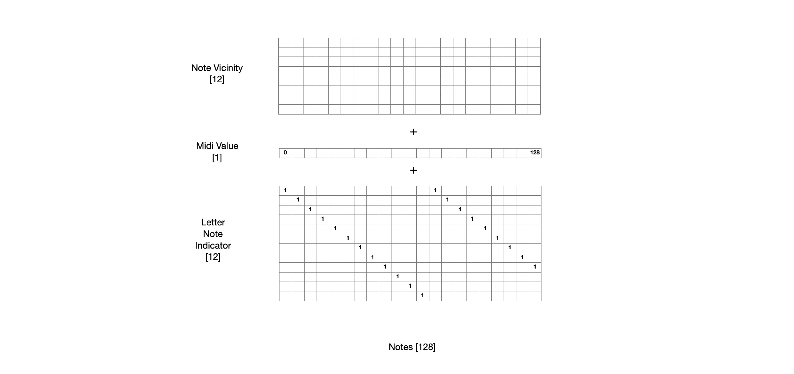
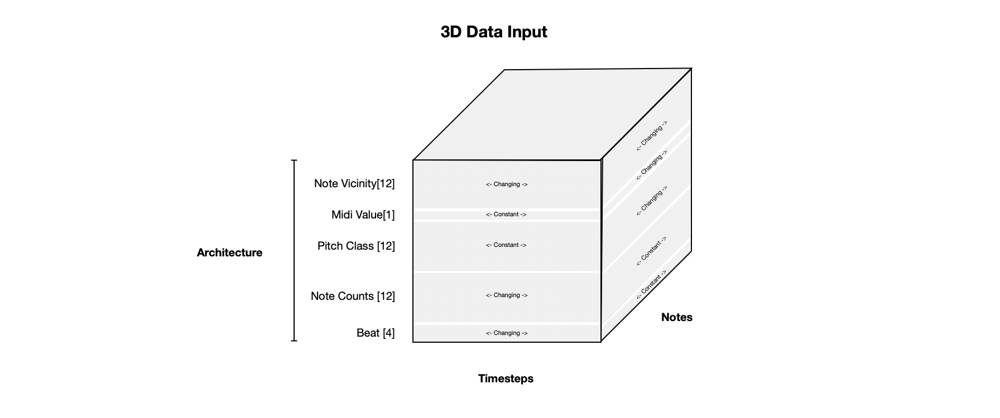

Music Generation RNN¶
In this project I prepare midi music files and train a recurrent neural network to be able to generate music! The structure of the model is based off this blog by Daniel Johnson. Check out the implementation using Tensorflow in the repo here
First, here’s one result!
Data Preprocessing¶
A significant portion of the work comes in preprocessing data. Below I give some background on how songs are represented as matrices. Then I describe how I preprocess the data.
Background¶
All training data is first obtained as midi files. Midi files are structured with instruments have timestamps when notes turn off and on. Each instrument can play notes at different frequencies spanning the ‘piano roll’. The piano roll consists of 128 unique steps. It includes notes A,A#,B,C .. etc at different octaves. I use the module pretty-midi to convert the midi file to the piano roll. This module provides a method for converting from midi to a piano roll but it takes in a frequency to sample at. THe midi files have information about the tempo of the song. I sample at a frequency higher than than 4x the tempo and then pull out notes for every beat in a 16 beat bar. This corresponds with 4/4 time in music notation.
Note Specfic Inputs¶
Piano Convolved Per Note
It’s intuitive that the next set of notes in a song depends on the notes than came before it. However, it is also true that the notes within a time step depend on the other notes in that time step. This model will be structured in a way that it predicts one note, one timestep at a time so that it these relationships can be modeled. To do this, the input data needs to be restructured in a per-note, per-timestep way so that the output can be taken as per-note and per-timestep. However, just because the output is a single note, single timestep doesn’t mean that the input has to be a single note (“Using middle C from last timestep to predict if we should play middle C this timestep). The first input this model will use is an octave above and an octave below for each note to predict whether it should be played in the next timestep. This is referred to as “Note Vicinity”. This is essentially a convolution along the note axis for each time step.
Single timestep:
Multiple timestep:
Adding note reference
All notes are trained and predicted from the same network. We want the model to be have some information about which note it is current training/predicting with. So a single element is added that represents the midi value for that note note 0->128. Additionally I also add a one hot encoding for which of the 12 lettered notes it currently is.

Time Specfic Inputs¶
Adding Beats
In western music it is common to divide music into 16 segments per bar. We want the model to pick up on patterns in music like playing chords on the downbeats of every bar. So, we give each timestep a length 4 vector that counts from 0 to 15 in binary form telling the model where is currently is within the bar.
Adding Note Counts
Although our midi piano roll has a length of 128, there are only 12 lettered notes: A, A#, B, C, C#, D, D#, E, F, F#, G, G#. Notes of the same letter from different octaves can be played together with no issue. We want the model to be able to understand which notes are emphasized in each timestep regardless of their octave. So we reduce the piano roll down to a count of each of the 12 notes and give this as input.

Putting it all together¶
The training data is represented in three dimensions as shown below. Some parts of the input change in the note dimension but are constant in the time dimension. The opposite is also true. The note vicinity part of input changes along the note and time dimension.

Data Labels¶
The data labels are the notes in the future timestep.
Model¶
The model is based on a type of recurrent neural network called LSTM. See for a good intro into recurrent neural networks.
Long Short Term Memory (LSTM) networks are a type of neural network with recurrent connections. Nodes in the network receive input from the nodes before it. They also receive the hidden state from the network in the previous timestep. Internally these networks have dense neural networks (and associated weights) for different internal gates: forget, remember, input_modulation, and output. During training, data is fed in sequentially and states are updated. Using back propogation through time the network learned how to processes sequential data such that it can accurately predict the training labels.
As described before, the network should be able to predict output based on the earlier output in time. The output should also predict notes within a time step based on the other notes in the time step.
The solution is to use two networks, one with recurrent connections in time, and another network with recurrent connections along the note dimension.
In practice, this is accomplished by passing the 3D input to the first time recurrent networks with notes along the batch dimension. Then the note and time dimensions are swapped. This swapped data is concatenated with the last previousely output note and data is passed to the note recurrent network. During training this additional input to the second network is just a shifted version of the labels so it is easy to obtain. However, during predicting this data doesn’t exist yet so prediction needs to happen 1 at a time.
Results¶
Here are some outputs from the network: